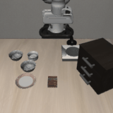

OpenPI 具身策略实验台
从公开示范轨迹、动作窗口和行为克隆训练，到固定初态下的 LIBERO 闭环执行。
任务为抓起位于餐盘与小碗之间的黑碗，并将它放入餐盘。以下结果来自 CPU 小样本实验。
轨迹审计与离线训练
33公开示范轨迹
3231动作和状态采样
0.1313模型验证 MAE
0.3246均值动作验证 MAE
按 episode 划分训练和验证。MAE 在保留的示范动作上计算，闭环成功率见下一节。
LIBERO 闭环
| 策略 | 每次执行步数 K | 成功 / 总数 | 平均调用 | 推理 P95 ms | 结局 |
|---|---|---|---|---|---|
| 行为克隆 | 5 | 2 / 3 | 25 | 0.929 | success×2, timeout×1 |
| 行为克隆 | 10 | 2 / 3 | 12.667 | 0.953 | success×2, timeout×1 |
| 零动作 | 5 | 0 / 3 | 44 | 0.042 | timeout×3 |
固定任务、初态和仿真种子。行为克隆仅使用机器人自身状态。π₀.₅ 权重评测通过 OpenPI 服务单独运行。
模拟器回放

动作片段长度的受控对照
| 策略 | 每次执行步数 K | 成功 / 总数 | 平均调用 | 推理 P95 ms | 结局 |
|---|---|---|---|---|---|
| 确定性规划器 | 5 | 10 / 10 | 2.5 | 0.003 | success×10 |
| 确定性规划器 | 1 | 10 / 10 | 8.8 | 0.002 | success×10 |
| 确定性规划器 | 10 | 5 / 10 | 1.5 | 0.003 | success×5, timeout×5 |
本节使用一维模拟环境验证配对评测，并包含目标中途移动的场景。